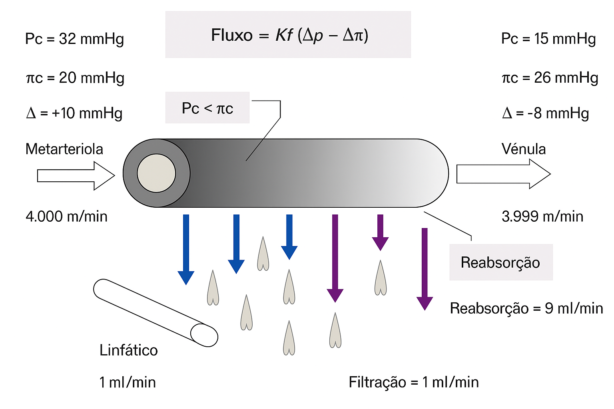
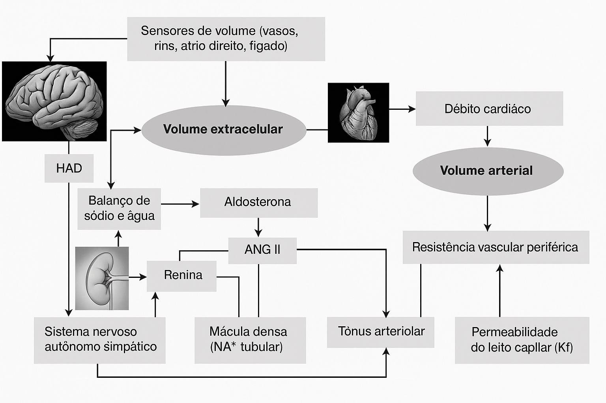
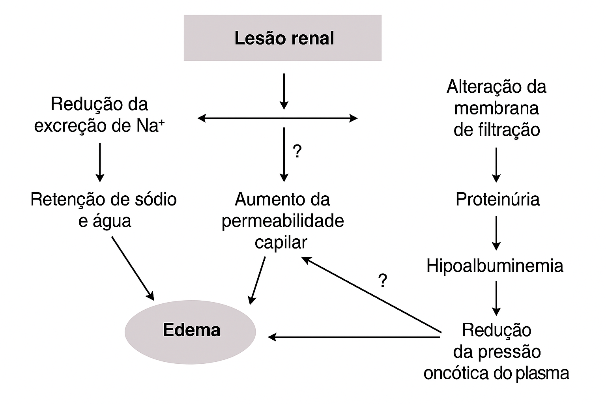

Edema
Introdução
Edema é o acúmulo anormal de líquido no espaço intersticial, variando de formas localizadas a generalizadas. Sua ocorrência indica falha nos mecanismos que regulam a distribuição de líquidos corporais. Pode resultar de alterações no fluxo capilar ou de desregulação no controle do volume extracelular. A compreensão dos mecanismos fisiopatológicos, ainda que complexa, é essencial para orientar intervenções terapêuticas eficazes.
Aspectos fisiopatológicos
O edema surge a partir de alterações no equilíbrio de Starling, descrito por Starling em 1896, que regula o fluxo de fluidos entre o capilar e o interstício. Esse equilíbrio depende da permeabilidade capilar (Kf), da pressão hidrostática (ΔPc) e da pressão oncótica (Δπc), segundo a fórmula:
\[ Fluxo = Kf (ΔPc – Δπc) \tag{1}\]
Em condições fisiológicas, a pressão hidrostática (Pc) na extremidade arteriolar do capilar é maior que a pressão oncótica (πc), promovendo filtração de fluido do sangue para o interstício. À medida que o fluido é filtrado, Pc diminui e a concentração de proteínas plasmáticas aumenta, elevando πc. Na extremidade venosa, ocorre inversão do gradiente pressórico, com πc superando Pc, o que favorece a reabsorção de fluido para o interior do capilar. O excesso de líquido no interstício é removido pelo sistema linfático, mantendo o equilíbrio hídrico e evitando formação de edema. A Figure 1 demonstra este macanismo.
A figura ilustra o equilíbrio de Starling no leito capilar, evidenciando a troca de fluidos ao longo da metarteríola até a vênula:
- Na extremidade arteriolar, a pressão hidrostática (Pc = 32 mmHg) excede a pressão oncótica (πc = 20 mmHg), promovendo filtração (Δ = +10 mmHg).
- Na extremidade venular, a pressão hidrostática (Pc = 15 mmHg) é menor que a pressão oncótica (πc = 26 mmHg), favorecendo a reabsorção (Δ = –8 mmHg).
- O balanço líquido mostra que dos 10 mℓ/min filtrados, 9 mℓ/min são reabsorvidos, e 1 mℓ/min é drenado pelo sistema linfático.
Essa dinâmica garante a homeostase dos fluidos intersticiais. Qualquer alteração nas forças de Starling pode levar ao desenvolvimento de edema. Se localizado, decorre de alterações restritas ao leito capilar. Se generalizado, envolve mecanismos sistêmicos de controle do volume extracelular (VEC), como retenção de sódio e água, frequentemente regulados pelos rins. Assim, o aparecimento de edema resulta de alterações na homeostase do sódio e da água.
A depender da alteração dos mecanismos sistêmicos de controle do VEC, os edemas são caracterizados como:
- cardíaco,
- renal,
- cirrótico ou
- nutricional.
A Figure 2 resume as principais vias de controle do VEC. Foram omitidas as alças natriuréticas como o fator natriurético atrial (FAN), as prostaglandinas, as cininas e o óxido nítrico.

O rim desempenha papel duplo na homeostase hidrossalina: é tanto efetor quanto sensor. Os dois principais sistemas reguladores — sistema nervoso autônomo simpático (SNAS) e sistema renina-angiotensina-aldosterona (SRAA) — dependem da função renal.
Para regular o balanço de sódio e água, os rins enviam sinais ao sistema nervoso central por meio de aferências nervosas, informando sobre o volume extracelular. A mácula densa, localizada nos túbulos renais, detecta a concentração de sódio tubular e, junto ao SNAS, regula a liberação de renina pelo aparelho justaglomerular, coordenando a resposta volêmica sistêmica.
A percepção de redução do volume arterial efetivo — por baixo débito cardíaco ou vasodilatação sistêmica — leva à ativação de mecanismos que favorecem a retenção de sódio e água, contribuindo para o desenvolvimento dos grandes edemas, como os de origem cardíaca, renal, hepática ou nutricional.
Embora 85% do sangue circulante esteja no compartimento venoso, os 15% localizados no território arterial são essenciais para garantir a perfusão tecidual. Esse volume arterial depende do volume sistólico (sangue ejetado pelo coração), que, segundo a lei de Frank-Starling, é determinado pelo retorno venoso, o qual depende do tônus das grandes veias e do volume intravascular total.
Além disso, o tônus das metarteríolas influencia a resistência vascular periférica e, portanto, o volume arterial. Reduções no volume arterial — por baixo débito cardíaco ou vasodilatação sistêmica — ativam mecanismos compensatórios que induzem retenção renal de sódio e água, processo central nas síndromes dos grandes edemas, em que os rins desempenham papel regulador fundamental.
Semiotécnica
Diagnóstico diferencial de edemas localizados
| Diagnóstico | Mecanismos | Semiotecnia | Dados Complementares | Tratamento |
|---|---|---|---|---|
| Erisipela / Celulite | Inflamação, aumento da permeabilidade capilar (Kf) | Calor, rubor e dor | Hemograma; cultura para identificação do patógeno | Antibióticos e analgésicos |
| Trombose venosa profunda | Aumento da pressão venosa capilar | Edema assimétrico, empastamento panturrilha, dor, circulação colateral | Ultrassom com Doppler | Anticoagulante |
| Linfedema | Aumento da pressão intersticial por obstrução linfática | Edema assimétrico, duro, frio e indolor, presença de adenomegalia | Investigação da etiologia (neoplasia, infecção específica, filariose etc.) | De acordo com a etiologia |
| Angioedema | Aumento da permeabilidade capilar (Kf) por ativação inadequada do complemento | Edema, frio, indolor, com prurido, aparecimento súbito, frequentemente em olhos e boca | Afastar uso de inibidores da ECA e anti-inflamatórios, inquérito alimentar, dosagem de componentes do complemento | Antihistamínicos; corticoides (casos adquiridos); plasma fresco (casos hereditários) |
| Uso de antagonistas do cálcio | Elevação da pressão hidrostática (vasodilatação arteriolar) | Edema simétrico, vespertino, em tornozelos, indolor | História de tratamentos anteriores, principalmente em casos de hipertensão arterial | Considerar suspensão ou troca do medicamento. Elevação dos membros, uso de meias elásticas |
| Insuficiência venosa periférica | Elevação da pressão venosa capilar | Edema assimétrico, dor de repouso, ardor, dermatite ocre, veias varicosas, úlceras venosas | História de gravidez, uso de anticoncepcionais orais e atividade no trabalho. Ultrassom com Doppler | Elevação dos membros, uso de meias elásticas. Cirurgia |
Diagnóstico diferencial de edemas generalizados
| Etiologia | Mecanismo | Semiotecnia | Exames Complementares |
|---|---|---|---|
| Síndrome nefrótica | Retenção de sódio renal; Hipoalbuminemia; Alteração da permeabilidade capilar | Urina espumosa; Edema facial e matutino; Anasarca | Proteinúria ≥ 3,5 g/dia; Hipercolesterolemia; Hipoalbuminemia |
| Síndrome nefrítica / IRA* | Retenção de sódio renal | Hipertensão arterial; hematúria; oligúria; náuseas | Hematúria (análise urinária); creatinina e ureia elevadas (azotemia); hiperpotassemia |
| Insuficiência cardíaca | Pressão venosa elevada; Retenção de sódio e água renal por redução do volume de sangue no território arterial por baixo débito cardíaco | Dispneia progressiva; ortopneia; estertores pulmonares crepitantes; taquicardia; pulso fino; estase jugular; hepatomegalia; edema vespertino | Cardiomegalia; congestão pulmonar (Rx de tórax); Redução da contratilidade e da fração de ejeção (ecocardiograma) |
| Cirrose hepática | Hipoalbuminemia; Retenção de sódio e água renal por redução do volume de sangue arterial (vasodilatação sistêmica); hipertensão portal (ascite) | Ver Tabela 33.3 | Elevação do tempo de protrombina; Elevação das bilirrubinas e transaminases (TGO, TGP, gama-GT, fosfatase alcalina); Hepatomegalia; hipertensão porta e esplenomegalia (ultrassom abdominal); varizes de esôfago (endoscopia digestiva); hipoalbuminemia |
Avaliação Clínica dos Edemas
A aferição sequencial do peso corporal é fundamental para acompanhamento da resposta ao tratamento. Estima-se que sejam necessários 4% a 5% de aumento do peso corpóreo para que o edema seja clinicamente detectável.
O sinal de Cacifo ou de Godet é identificado ao comprimir-se a pele contra uma protuberância óssea (como a tíbia) por cerca de 10 segundos e observar a presença de depressão. Essa depressão pode ser graduada em uma escala de cruzes (+ a ++++), sendo que a intensidade máxima (++++) é atribuída a edemas que formam depressões maiores ou iguais a uma polpa digital.
Outra informação útil é o tempo necessário para o desaparecimento da depressão após a remoção da pressão digital.
- Caso a depressão desapareça em tempo menor que 15 segundos, suspeita-se de baixa pressão oncótica, ou seja, hipoalbuminemia.
- Tempos maiores sugerem edema secundário ao aumento da pressão hidrostática.
- Caso a depressão desapareça em tempo menor que 15 segundos, suspeita-se de baixa pressão oncótica, ou seja, hipoalbuminemia.
Atenção especial deve ser dada a pacientes acamados, nos quais o edema é mais intenso na região sacral, que deve ser sistematicamente examinada.
Síndromes dos grandes edemas
Edema nefrítico
As síndromes nefríticas agudas são caracterizadas por edema, hematúria, hipertensão e proteinúria subnefrótica (< 3,5 g/dia). O edema nas síndromes nefríticas agudas (?@fig-sdnefrítica-lra) é causado principalmente pela redução da taxa de filtração glomerular (TFG). Mesmo com creatinina sérica normal, a queda da TFG reduz a carga filtrada de sódio. A oferta de sódio no túbulo distal torna-se mínima, permitindo sua reabsorção quase completa no néfron distal. Isso leva à retenção de sódio e água (por equilíbrio osmótico).
Se houver restrição rigorosa de sódio na dieta, o edema pode ser evitado. Contudo, com ingestão liberal de sal, ocorre expansão do volume extracelular (VEC), resultando em edema e hipertensão arterial, mesmo sem proteinúria significativa (>3,5 g/dia).
Na insuficiência renal aguda, como na necrose tubular aguda, o edema pode ou não estar presente, dependendo da relação entre três fatores principais:
- Redução da TFG
- Queda na excreção renal de sódio
- Aporte dietético ou intravenoso de sódio
A IRA pode se manifestar com oligoanúria ou poliúria, e é comum em pacientes críticos que recebem grandes volumes de líquidos intravenosos ricos em sódio. Nesses casos, ocorre expansão do volume extracelular, aumento da pressão hidrostática capilar e consequente formação de edema.
 {#fig-sdnefrítica-lra width=60%}
{#fig-sdnefrítica-lra width=60%}
Edema nefrótico
O edema nefrótico (Figure 3) surge em doenças renais com lesão da membrana basal glomerular e/ou dos pedicelos das células epiteliais, levando a aumento da permeabilidade glomerular e perda maciça de proteínas na urina (proteinúria > 3,5 g/24h). Clinicamente, manifesta-se por urina espumosa e edema, compondo a síndrome nefrótica.
Três mecanismos principais contribuem para o edema:
- Retenção renal de sódio
A maioria dos pacientes com síndrome nefrótica apresenta retenção tubular de sódio. Estudos em modelos animais sugerem que essa retenção ocorre principalmente nos segmentos mais distais do néfron (fim do túbulo distal e túbulos coletores). Nestes sementos, a reabsorção de sódio envolve os canais de sódio sensíveis à aldosterona e o transporte ativo pela Na+/K+-ATPase. No entanto, a ativação da aldosterona é rara nesta síndrome. Desta forma, o aumento da reabsorção renal de sódio é explicada por uma maior expressão da NA+/K+-ATPase. O mecanismo, no entanto, ainda é desconhecido.
- Hipoalbuminemia, com consequente redução da pressão oncótica plasmática
- Aumento da permeabilidade capilar
Apesar da queda da pressão oncótica, o gradiente entre a pressão oncótica transcapilar tende a ser preservado pela redução simultânea da concentração proteica no interstício, o que isola a alteração da permeabilidade capilar como fator essencial para o edema.
O mecanismo da alteração da permeabilidade capilar ainda é incerto. Há evidências de envolvimento de: - Linfócitos T - responsáveis também pela alteração da permeabilidade da membrana glomerular - Citocinas inflamatórias, como TNF-alfa - Modificações nas proteínas de ancoramento do endotélio vascular na membrana basal capilar - secundária à própria hipoalbuminemia ou atividade TNF-alfa - Maior atividade da Na⁺/K⁺-ATPase nos túbulos distais e coletores (sem ativação significativa da aldosterona)
Características clínicas:
- Edema facial matinal, especialmente palpebral
- Edema vespertino em membros inferiores
- Em casos graves: anasarca e derrames cavitários (pleural, pericárdico, ascite)

Edema Cardíaco
O edema cardíaco (?@fig-cardíaco) resulta da redução do débito cardíaco (DC) devido à falência do miocárdio, como ocorre na insuficiência cardíaca congestiva (ICC). Essa disfunção leva a:
- Aumento da pressão venosa sistêmica
- Diminuição do volume de sangue no compartimento arterial
Essas alterações ativam estímulos aferentes de baroreceptores e sensores de volume localizados nos átrios, ventrículo esquerdo, arco aórtico, seio carotídeo e arteríola aferente renal. Em resposta, ocorre no SNC:
- Ativação do sistema nervoso simpático
- Liberação não osmótica do hormônio antidiurético (HAD)
E como consequência, - Ativação do sistema renina-angiotensina-aldosterona (SRAA)
O desequilíbrio das forças de Starling nos capilares, com pressão hidrostática elevada na extremidade venosa, impede a reabsorção de fluido intersticial, levando à retenção de água no interstício (edema)**.
Além disso, o HAD promove retenção de água livre, o que pode causar hiponatremia dilucional. Importante destacar que os rins são estruturalmente normais nesses pacientes, e muitos recuperam a função urinária após transplante cardíaco.
Os peptídeos natriuréticos atrial (ANP) e cerebral (BNP) desempenham um papel compensatório e protetor na fisiopatologia do edema cardíaco. ANP (atrial) e BNP (ventricular) são secretados pelas célular miocárdicas em resposta à distensão cardíaca por sobrecarga de volume. Exercem efeitos natriuréticos, diuréticos e vasodilatadores, ajudando a reduzir o volume extracelular e a pressão de enchimento cardíaco. No entanto, na insuficiência cardíaca, sua ação é insuficiente para neutralizar a ativação do SRAA e do sistema nervoso simpático, que promovem retenção de sódio e água. Por isso, o edema se instala apesar dos níveis elevados desses peptídeos, que também são úteis como marcadores da gravidade da disfunção cardíaca.
Principais achados clínicos em pacientes cirróticos.
- Icterícia
- Eritema palmar
- Encefalopatia hepática
- Hálito hepático
- Equimoses
- Hematêmese/Melena
- Esplenomegalia
- Aranhas vasculares (spiders)
- Hipotrofia muscular
- Alopecia, ginecomastia e atrofia testicular (homens)
- Ascite
- Circulação colateral (“cabeça de Medusa”)
Características clínicas do edema:
- Edema gravitacional (vespertino), acentuado com ortostatismo
- História de dispneia progressiva, ortopneia, dispneia paroxística noturna, nictúria, tosse, cianose
- Achados físicos: taquicardia com ritmo de galope, terceira bulha, desvio do ictus cordis, estase jugular, estertores finos, hepatomegalia, derrame pleural
- Antecedentes de doenças cardíacas como Chagas, isquemia, miocardiopatias, hipertensão, febre reumática
 {#fig-cardíaco width=60%}
{#fig-cardíaco width=60%}
Edema Cirrótico
Na cirrose hepática, o edema (geralmente com ascite exuberante) resulta de múltiplos mecanismos interligados (?@fig-hepático), reflexo da falência hepática estrutural e funcional. Os principais fatores envolvidos são:
- Hipoalbuminemia
- Decorrente da reduzida síntese hepática de albumina pelos hepatócitos lesados.
- Contribui para a queda da pressão oncótica plasmática, favorecendo a saída de líquido para o interstício.
- Hipertensão portal
- Causada pela fibrose e distorção da arquitetura hepática, dificultando o fluxo sanguíneo pelos sinusoides.
- Leva à congestão venosa esplâncnica e ao aprisionamento de sangue no território mesentérico, reduzindo o enchimento arterial (underfilling).
- Vasodilatação sistêmica e formação de shunts arteriovenosos
- Aumento da produção de óxido nítrico e redução do metabolismo de substâncias vasodilatadoras.
- Provoca redução da resistência vascular periférica e do volume arterial efetivo.
- Ativação de mecanismos compensatórios
- O underfilling arterial ativa o SRAA, com consequente hiperaldosteronismo secundário, o sistema nervoso simpático e a liberação de HAD, promovendo retenção de sódio e água.
- Essa retenção contribui para o acúmulo de líquido no interstício e cavidades (ascite).
- Síndrome hepatorrenal
- Em casos graves, a retenção de volume é tão intensa que evolui para oligoanúria, caracterizando essa síndrome funcional, reversível com o transplante hepático.
Característica clínica:
- Ascite volumosa é o principal achado do edema cirrótico, frequentemente associada à hipoalbuminemia e hipertensão portal.
 {#fig-hepático width=60%}
{#fig-hepático width=60%}
Mixedema (Hipotireoidismo)
No hipotireoidismo, ocorre um edema duro e não depressível, conhecido como mixedema, causado pelo acúmulo de glicosaminoglicanas no interstício. Esse tipo de edema é acompanhado por sinais e sintomas sistêmicos típicos do hipotireoidismo, o que facilita o diagnóstico diferencial.
Edema por Desnutrição Proteica (kwashiorkor)
Na desnutrição proteica, o edema é decorrente da hipoalbuminemia, reduzindo a pressão oncótica plasmática. Geralmente vem acompanhado de:
- Alterações na coloração dos cabelos
- Déficit de crescimento
- Deficiências vitamínicas e de oligoelementos
O quadro clínico é variável e reflete o comprometimento nutricional global.
References
References
Martinez, José Baddini, Márcio Dantas, Ângela Leal, and Júlio César Voltarelli. 2024. Semiologia Geral e Especializada: Segunda Edição. 2nd ed. São Paulo: Ed. dos Autores.